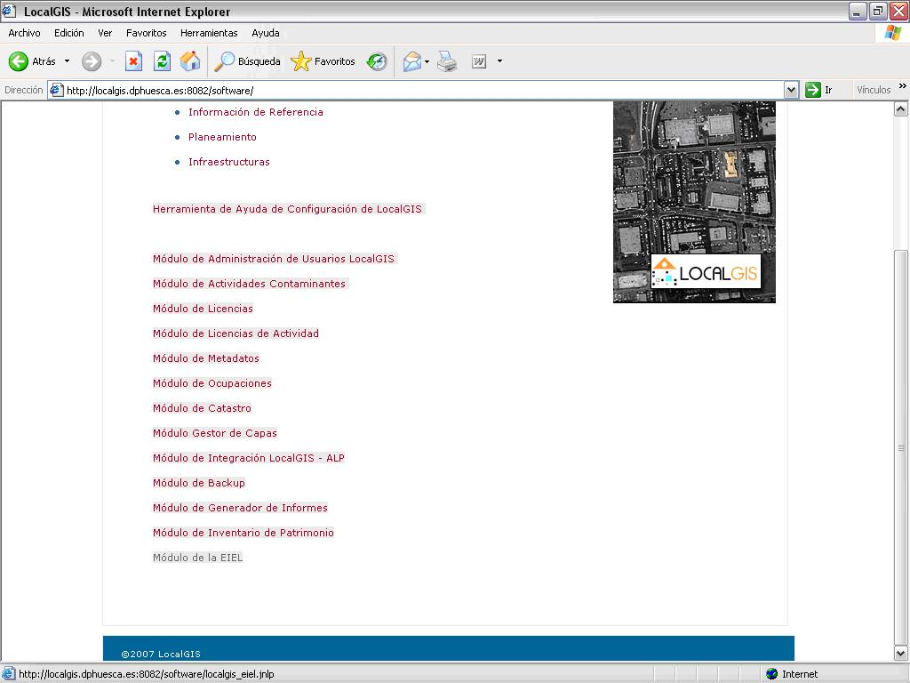

Introducción al Módulo de la EIEL
Esta aplicación permite gestionar mapas, datos y dominios referentes a la E.I.E.L. Accederemos desde el navegador, haciendo clic en el enlace “Módulo de la EIEL”. La descarga de este módulo se realizara via Web a traves de Java Web Start, permitiendo que cualquier usuario pueda tenerlo en su equipo y ejecutarlo cuando lo requiera.
